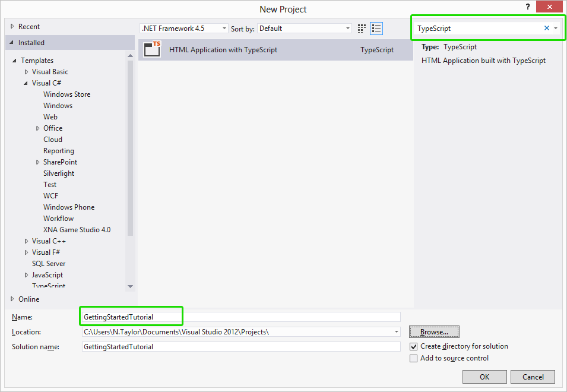
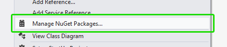
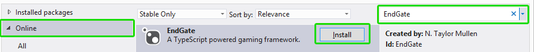
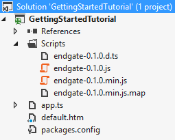
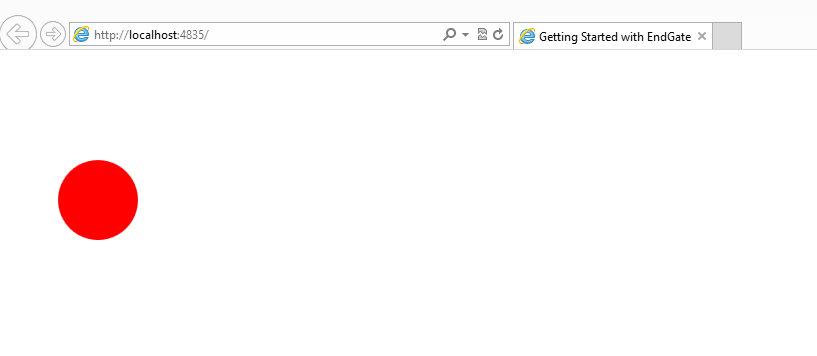

Getting Started: Graphics
In this tutorial I'll introduce you to the basics of game development with EndGate. We'll go over how to setup your development environment (Visual Studio) to use TypeScript and then teach you the fundamentals of developing games with EndGate. I'll be using VS2012 but VS2010 should be very similar (but would require more setup when creating your first project). This is the first part of a three part series in getting started with EndGate. In this part we focus on manipulating graphics and drawing them onto the game screen.
Overview:
Setting up your environment
If you've already setup your environment to use TypeScript skip to the "Starting an EndGate project" section.
See the FAQ question devoted to setting up your environment to use TypeScript.
Starting an EndGate project
Now that our environment is setup to work with TypeScript lets get started.
- Start Visual Studio.
- File > New > Project. Now in the search box in the top right corner of the dialog type in TypeScript. This will bring up the HTML Application with TypeScript template. Select it and name the project GettingStartedTutorial.
 - Right click on the GettingStartedTutorial project and click on Manage Nuget Packages....
 - Click the Online accordion, then in the upper right search box type in EndGate. The EndGate package should come up, click on the Install button. Once installed you can close the Package Manager window.
 - Lets now clean up some of the files within the project to work with what we will be using.
- Delete the app.css file, we will not be using a style sheet within this tutorial.
- Delete the contents of app.ts
- Replace the contents of default.htm with:
Note: if you have a different EndGate library version modify the script inclusion accordingly.
- Your project should look something like this (the EndGate version may be different than the one depicted in the screen shot):

Creating a Game
Lets work on creating the fundamentals of our first game.
First, adding a basic TypeScript file to the project (for those unfamiliar to TypeScript).
- Right click on the GettingStartedTutorial and click on the Add > New Item....
Note: once a TypeScript file has been added a single time to a project there will be a quick link to adding TypeScript files in the add dialog. - In the upper right corner of the opened dialog type "TypeScript" into the search box.
- Click on the TypeScript File template and name the file MyGame in the bottom search box; then press Add.
- Delete the contents of the file (TypeScript files come with default code when added).
Second, lets start creating our game class.
- We need to have a reference to the EndGate library so we can have proper intellisense. To do that add the following line of code to the top of MyGame.ts.
Note: Make sure the referenced EndGate version matches the version that is installed. - Lets now create the basic structure that will represent our game; Add the following code to the MyGame.ts file.
Lets look at the first line:
We create a "MyGame" class that extends an EndGate Game class.
An important thing to note is that the line could also be written as: This is because the short hand version of EndGate is eg. You can access all EndGate objects via EndGate OR eg.
We then have: The EndGate Game class needs to have its super constructor called to instantiate the game.
Note: the super constructor can also take a canvas element if you wish to create something other than a full screen game; the provided canvas would have the game drawn onto it. - We now have a basic game class, so lets actually draw something to the screen. Add the following code to the MyGame constructor.
The Game object has a Scene field that represents what's being drawn. So when we call the Add method and pass in a Circle graphics object the circle will then be drawn to the game screen. The circle is positioned at x 100 and y 150, a radius of 40 and a color of red.
To get a full list of drawable graphics checkout the Graphics namespace.
Finally, before we can run our game we need to include the MyGame file into the html page and create an instance of it.
- Open the default.htm file and at the bottom of the body tag and BEFORE the app.js script inclusion include the reference to the generated MyGame.js file.
- Modify the app.ts file to look like:
We can now run our game, hit ctrl+f5. It should look like this:

Moving the circle
Well, now that we can draw graphics in our game we probably want to move/animate them throughout the screen as we would in a game.
- Lets start out by modifying our MyGame.ts to save the circle graphic so that we can then move it accordingly.
- We can now utilize the Game's Update function to incrementally move the Circle across the screen. Lets add the following code to the end of the MyGame class (after the constructor but before the ending curly bracket).
The Update function is called (by default) 40 times per second. Therefore in the above code we utilize the GameTime's Elapsed Seconds field which represents how much of a second has passed since the last call to Update. Therefore if we multiply it by 200 (our circle move speed) we can ensure that we move the circle by 200 pixels to the right every 1 second.
Synopsis
If we run the project now we should see the circle move across the browser (infinitely). If we wanted to gamify this project more we could reverse the translation direction when the circle hits the edge of the screen; one of the many modifications we could make.
Throughout this tutorial you should have learned how to create a basic game class, access the EndGate library, draw graphics to the screen and utilize the game's update function to animate objects on the screen.
Lastly here's how the files should look after the project has been completed:
- app.ts:
- MyGame.ts:
- default.htm:
And if you'd like to get the project source in its entirety you can always download it here:
Download Tutorial Source
To continue onto the next tutorial click Here.